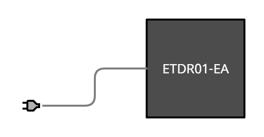
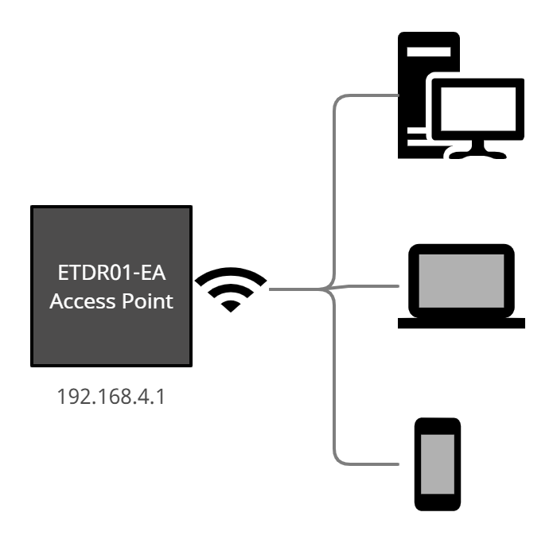
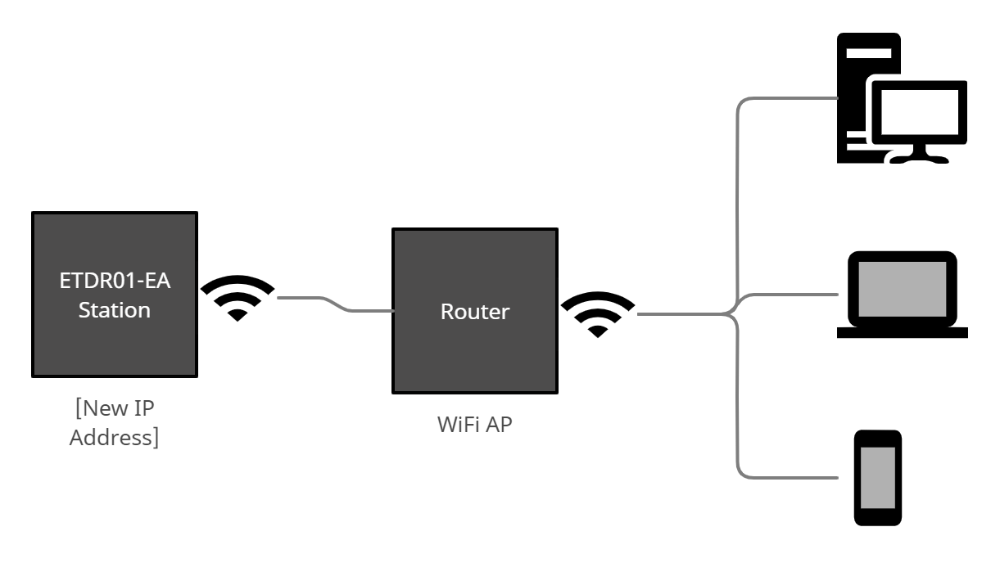

Intro
El Attendance Control (ETDR01-EA) es un dispositivos IOT que provee a las organizaciones y a los hogares un registro de asistencia mediante autofotos fechadas. Dispone de una interfaz Web que facilita su configuración, gestión y visualiación del registro actualizado a la fecha.
Para realizar estos pasos de configuración del ETDR01-EA se requiere de un dispositivo cliente (una PC, laptop o smartphone) con capacidad de acceso WiFi.
Paso 1 - Encender el ETDR01-EA
Conecte un extremo del cordón de electricidad provisto a la fuente de alimentación más cercana, y el otro extremos a la entrada del ETDR01-EA.

Cuando el ETDR01-EA está conectado, ejecuta una secuencia de inicio, la cual es indicatda mediante el encendido de la luz led flash, que se apaga una vez que el proceso de inicio finaliza.
Paso 2 - Conectar el dispositivo cliente al Punto de Acceso WiFi del ETDR01-EA
Por primera vez (y siempre que las credenciales del Punto de Acceso WiFi del router cambien), el ETDR01-EA hace disponible un Punto de Acceso WiFi (AP) para permitir la configuración inicial. Este AP es accessible a través de la dirección IP 192.168.4.1.

Desde el dispositivo cliente (PC, laptop o smartphone), conecte al Punto de Acceso (AP) nombrado ETDR01-###############. La frase de clave es 12345678.
¡IMPORTANTE!
La última parte del hostname del AP provisto por el dispositivo ETDR01-EA (##############) es el número serial del dispositivo. Asegúrese de recordar cómo encontrarlo tal y como se ha indicado en este paso o retorne a este paso siempre que necesite obtenerlo.
Más adelante, este número podrá ser encontrado en la página web del dispositivo, en la ruta Configuration->Device status->Serial number, pero para esto necesitará el password por defecto, que es el número de serie del dispositivo, así que mejor asegúrese de recordar cómo encontrarlo, tal y como se indica en este paso, o retorne a este paso siempre que necesite saber cómo obtenerlo.
Step 3 - Configuración Inicial
Una vez que haya conectado su dispositivo cliente al AP del ETDR01-EA, abra el navegador en su dispositivo cliente y navegue a la dirección IP 192.168.4.1.
En la pagina Login, entre Admin en el campo Nombre de Ususario, y entre el número serial en el campo Password.
El navegador muestra el menú principal. Desde ahí, haga clic o tap en la opción Change Password. Asegúrese de seleccionar un buen password.
A seguidas, haga clic o tap en la opción WiFi Connection, para configurar el acceso WiFi al Punto de Acceso del router de la red local.
Desde la lista mostrada en la página seleccione el SSID del Punto de Acceso (AP) de la red local, y entre la frase clave correspondiente.
Active Restart Now para que la nueva conexión WiFi y el nuevo password sean activados.
Paso 4 - Encuentre la nueva dirección IP assignada al ETDR01-EA
Despues de reiniciar, el ETDR01-EA se connecta al AP de la red local con las credenciales provistas.
Si logra conectarse, el escenario cambia a este contexto:

Para accesar al servidor web del ETDR01-EA, página titulada Setup and Info, el usuario necesita saber la nueva dirección IP assignada por el router de la red local.
La nueva dirección IP puede ser obtenida a través de la página de configuración del router, buscando el dispositivo por el nombre de host ETDR01-###########, o mediante un programa escanner de redes.
¡IMPORTANTE!
Cada vez que conecte el ETDR01-EA, el intentará conectarse como estación al Punto de Acceso WiFi (AP) con las credenciales WiFi que almacena, las cuales fueron provistas por el usuario.
Si no dispone de credenciales o estas han cambiado en algún momento después de la configuración, en 30 segundos procederá crear un Punto de Acceso (AP) propio con la dirección IP 192.168.4.1, para permitir al usuario configurar las credenciales WiFi, así como otras configuraciones.
Paso 5 - Probar el Attendance Control
Parese en frente del dispositivo y presione con un dedo el botón disparador (no es necesario tocarlo, ya que este detectará el acercamiento y reaccionará en consecuencia). Tan pronto como acerque su dedo al botón disparador, el ETDR01-EA procederá a encender la luz del flash, a tomar una foto y a realizar el registro correspondiente.
Para verificar el nuevo registro de asistencia, navegue a la dirección IP del dispositivo y entre con las credenciales Admin y password. A seguidas, hága clic o tap en la opción Photo Files List. Esta opción muestra las últimas fotos tomadas. Verifique que el nombre del archivo corresponda a la fecha y hora en que se tomó la foto de prueba de registro asistencia. Si la fecha y hora es distinta a la correcta, eso quiere decir que necesita cambiar el parámetro Time Zone en la configuración del dispositivo. Esto se hace en el siguiente paso.
Paso 6 - Cambiar el Time Zone
Clic o tap en Settings; en el campo Time Zone Field escriba el code correspondiente al lugar en que se encuentra. Este código está disponible desde la URL provista a continuación del campo.
Paso 7 - Led Flash Enabled
por defecto, el dispositivo enciende la luz led de flash para tomar las fotos. Esto puede que no sea necesario si en la sala hay una excelente iluminación o si resulta inconveniente para el usuario regular. If es el caso, haga clic o tap en Settings, desactive la caja de chequeo nombrada Led Flash Enabled, y clic o tap en Apply.
Paso 8 - IOT Web Server Enabled
El ETDR01-EA tiene la capacidad de notificar un servidor cada vez que alguien se pone presente. Esto habilita el post-procesamiento del event, para el cual el usuario administrador debe configurar los siguientes parámetros:
Web Server Post Domain
URL a ser notificada
Web Server Post Port
Puerto del Web Server a ser notificado
Web Server Post Path
Ruta del Web Server a ser notificado
Web Server Post UUID
Código clave que puede ser validado por Web Server a ser notificado
Para que esta configuración tenga lugar, el parámetro IOT Web Server Enabled debe ser activado.
Solución de Problemas
No se conecta al WiFi de la red local
Verifique que las credenciales del WiFi de la red local no hayan cambiado. Si es el caso, el dispositivo ETDR01-EA intenta conectarse con credenciales incorrectas, por lo que se comporta según se describe en el paso 2.
No toma nuevas fotos
Puede ser que no quede más espacio disponible en el ETDR01-EA. Verifique este dato en Settings->Device State, en el dato titulado Free Bytes. Si este es el caso, elimine los registro que ya no necesite o todos según considere. Esto lo puede hacer mediante las opciones Photo Files List y Delete All Photo Files
El dispositivo no inicia o se mantiene reiniciando
Verifique la conección del cordón de alimentación (PSU) y la toma de electricidad de la pared.
Señal Wi-Fi débil.
El dispositivo requiere una buena señal WiFi para una óptima operación, por lo que debe ser ubicado lo más cerca posible del router WiFi.
No recuerdo las credenciales de acceso al web server.
Este caso requiere reiniciar el dispositivo, con lo que se perderán las fotos y los parámetros de configuración. Para reiniciar el dispositivo, debe emplear el usuario Admin y el password por defecto, el cual es la segunda parte del nombre de host del dispositivo. Acceda con estas credenciales; la página web preguntará si quiere reiniciar los parámetros a sus valores originales y eliminar todos los registros a la fecha. Si responde afirmativamente, el dispositivo queda reiniciado, y para reconfigurarlo deberá ir al paso número 1 de esta guía.
Actualizado el 2021-02-21
Para más detalles y asistencia, no dude en contactarnos en www.enablitech.com